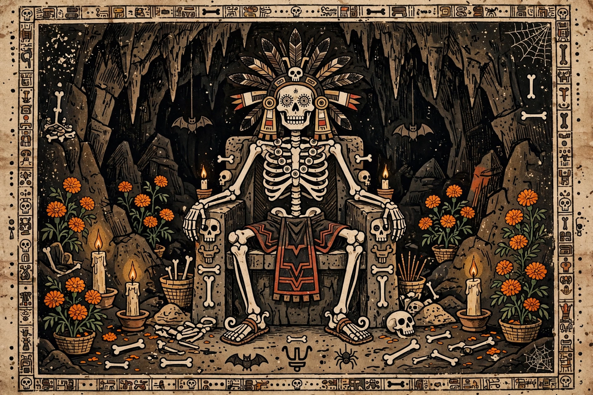

Mictlan
| Mictlan | |
|---|---|
| Religion | Aztec (Mexica) religion |
| Rulers | Mictlantecuhtli and Mictecacihuatl |
| Levels | Nine |
| Journey time | Four years |
| Guide | A xoloitzcuintli (dog) |

Mictlan (Classical Nahuatl: Mictlān, "place of the dead") is the underworld of Aztec mythology, the destination of most ordinary people after death. It lies far to the north and deep below the earth, and is ruled by Mictlantecuhtli ("Lord of Mictlan") and his consort Mictecacihuatl ("Lady of the Dead"), depicted as fleshless skeletons. Unlike Christian hell, Mictlan was not a place of punishment for sin: one's afterlife destination among the Aztecs depended on the manner of one's death, not on moral conduct.
The nine levels
The dead undertook a gruelling four-year journey through Mictlan's nine levels, described in the Florentine Codex and the Codex Vaticanus A. The levels included a river (Apanohuacalhuia) that could be crossed only with the help of a dog — a xoloitzcuintli, which is why dogs were sacrificed or buried with the dead; a place where mountains clash together; an obsidian mountain; a region of freezing knife-edged winds that cut the flesh; a place where people float like flags; a place where the traveller is shot with arrows; a place where wild beasts devour hearts; a foggy river crossed nine times; and finally Chicunamictlan, "the ninth Mictlan," where the soul found rest and dissolution before the lord and lady of the dead. Grave goods — food, water, clothing, weapons and valuables — were cremated or buried with the corpse to equip it for the journey.
Other destinations
Only those who died in ordinary ways (including disease and old age) went to Mictlan. Warriors who died in battle or on the sacrificial stone, and women who died in childbirth (the cihuateteo), accompanied the sun in the sky; those who died by water, drowning or lightning went to Tlalocan, the paradise of Tlaloc; and dead infants went to a tree of nourishment, Chichihuacuauhco, to await rebirth.
Legacy
Mictlan and its rulers survive vividly in modern Mexico's Day of the Dead (Día de Muertos) celebrations, in which Mictecacihuatl has been reimagined as a patroness of the festival (and popularly fused with the figure of La Calavera Catrina). The nine-level underworld has also inspired contemporary literature, film and video games set in a Mesoamerican mythic world.
See also: Mesoamerican religion · Tlaloc · Bernardino de Sahagún